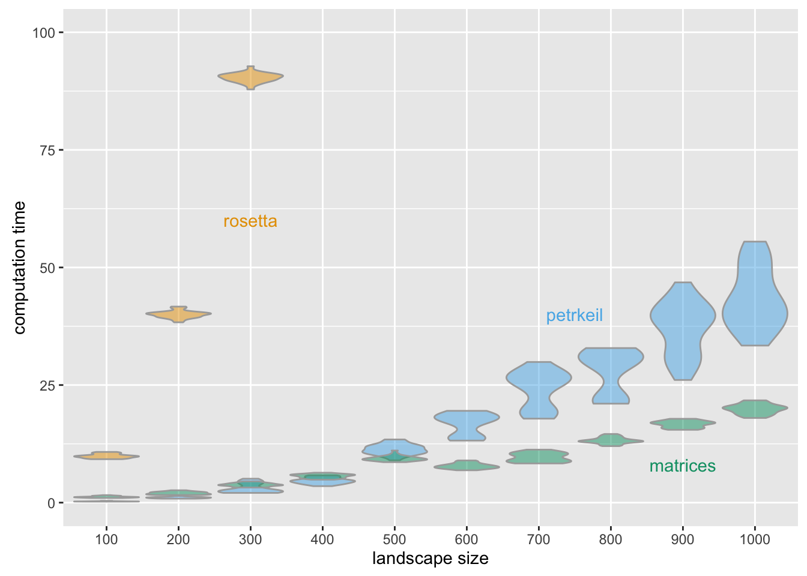

Among other fields, in machine learning vectorization is a common approach to reduce computation costs. Here I want to show how this approach can be applied to cellular automata. I am using Conway’s Game of Life as an example.
Cellar automata see Wikipedia are a widely used tool in modeling e.g. when it comes to the analysis of spatially explicit dynamics. The classical approach is to represent the 2-dimensional space as grid and iterate over it to calculate neighborhood dynamics grid cell by grid cell. The computational effort for this is \(O(n^3)\) with \(n\) representing the width of a square matrix, representing the landscape. However, when we deal with large landscapes computation costs grow strongly.
Conway’s Game of Life is a simple but yet interesting cellular automaton (for details see Wikipedia). Implementations for a large number of programming languages can be found here.
The simple set of rules reads as follows:
In the following a vectorized version of the game is shown and explained using a 6 x 6 matrix representing the “landscape” where the game takes place.
m <- t(matrix(c(0, 0, 0, 0, 0, 0,
0, 0, 0, 0, 0, 0,
0, 1, 1, 1, 0, 0,
0, 1, 1, 1, 0, 0,
0, 1, 1, 1, 0, 0,
0, 0, 0, 0, 0, 0), 6))This is the initial state of of our cellular automaton. To calculate the subsequent one, we need to know the number of living neighbors around each cell. To achieve that, we just transform this matrix \(m\) in a few steps. For the transformation we use another matrix \(t\):
t <- t(matrix(c(1, 1, 0, 0, 0, 0,
1, 1, 1, 0, 0, 0,
0, 1, 1, 1, 0, 0,
0, 0, 1, 1, 1, 0,
0, 0, 0, 1, 1, 1,
0, 0, 0, 0, 1, 1), 6))Multiplying matrix \(m\) with \(t\) yields the number of neighbors in a row.
tm <- t %*% mThe resulting matrix looks like that:
0 0 0 0 0 0
0 1 1 1 0 0
0 2 2 2 0 0
0 3 3 3 0 0
0 2 2 2 0 0
0 1 1 1 0 0The numbers of neighbors in a column are calculated by swapping the factors of that matrix multiplication.
tm <- m %*% tNow the resulting matrix reads:
0 0 0 0 0 0
0 0 0 0 0 0
1 2 3 2 1 0
1 2 3 2 1 0
1 2 3 2 1 0
0 0 0 0 0 0Combining both operations yields the number of neighbors plus the focal cell itself.
tm <- t %*% m %*% t0 0 0 0 0 0
1 2 3 2 1 0
2 4 6 4 2 0
3 6 9 6 3 0
2 4 6 4 2 0
1 2 3 2 1 0To get only the number of neighboring cells for each cell without the cell itself we have to subtract the original matrix \(m\).
tm <- t %*% m %*% t - m0 0 0 0 0 0
1 2 3 2 1 0
2 3 5 3 2 0
3 5 8 5 3 0
2 3 5 3 2 0
1 2 3 2 1 0Now, we have the number of neighbors of each cell. Based on this we can calculate the next states based on the rules described above: First, we set all cells to zero that will not be alive in the next time step.
tm[tm == 1] = 0
tm[tm > 3] = 00 0 0 0 0 0
0 2 3 2 0 0
2 3 0 3 2 0
3 0 0 0 3 0
2 3 0 3 2 0
0 2 3 2 0 0Second, we are interested in all cells with three neighbors and living cells with two neighbors. By adding the original matrix \(m\) to the matrix \(tm\), all living cells with two or tree neighbors get the value 3 or 4. Dead cells with three neighbors also get the value 3. All other cells get the values 0, 1 or 2. These will be dead in the next time step.
tm <- tm + m0 0 0 0 0 0
0 2 3 2 0 0
2 4 1 4 2 0
3 1 1 1 3 0
2 4 1 4 2 0
0 2 3 2 0 0Now, all dead cells are set to 0 and all other cells are set to 1.
tm[tm < 3] = 0
tm[tm > 0] = 10 0 0 0 0 0
0 0 1 0 0 0
0 1 0 1 0 0
1 0 0 0 1 0
0 1 0 1 0 0
0 0 1 0 0 0Thus the whole algorithm for one time step reads:
tm <- t %*% m %*% t - m
tm[tm == 1] = 0
tm[tm > 3] = 0
tm <- tm + m
tm[tm < 3] = 0
tm[tm > 0] = 1
m <- tmIf we were only interested in the Von Neumann neighborhood (four neighbors are considered), the corresponding calculation of \(tm\) in the first line would be:
tm <- t %*% m + m %*% t - 2 * m0 0 0 0 0 0
0 1 1 1 0 0
1 2 3 2 1 0
1 3 4 3 1 0
1 2 3 2 1 0
0 1 1 1 0 0If we want to model a torrodial world where the game of life takes place, we need to modify the transformation matrix \(t\) (add ones in the lower left and upper right corners).
t <- t(matrix(c(1, 1, 0, 0, 0, 1,
1, 1, 1, 0, 0, 0,
0, 1, 1, 1, 0, 0,
0, 0, 1, 1, 1, 0,
0, 0, 0, 1, 1, 1,
1, 0, 0, 0, 1, 1), 6))The whole algorithm for a 20 x 20 torrodial world reads:
library(Matrix)
# Constructing the matrix of the game.
width <- 20
# Filling m with 0's.
m <- Matrix(rep(0, width * width), width, sparse = TRUE)
# Constructing a glider in the upper left corner.
i <- 1
j <- 1
# Setting living cells of the glider.
m[i + 1, j] <- 1
m[i + 2, j + 1] <- 1
m[i, j + 2] <- 1
m[i + 1, j + 2] <- 1
m[i + 2, j + 2] <- 1
# Constructing the transformation matrix.
tt <- Diagonal(width)
# Constructing the minor diagonals.
md <- Diagonal(width - 1)
md <- rbind(0, cbind(md, 0))
tt <- tt + md + t(md)
# Making it torrodial.
tt[c(1,width),c(width,1)] <- 1
# Calculating the game for 10 time steps.
for (i in c(1:10)) {
tm <- tt %*% m %*% tt - m
tm[tm == 1] = 0
tm[tm > 3] = 0
tm <- tm + m
tm[tm < 3] = 0
tm[tm > 0] = 1
m <- tm
}You can find all the code related with this post, including a shiny app and the script for comparing the performance of different implementations in parallel on github.
This approach is most advantageous for sparse matrices. To show this, three implementations are compared:
the straight forward implementations found on rosettacode.org,
a very fast implementation by petrkeil found on r-bloggers.com,
the implementation described here named matrices.
The violin plot below shows performances for a quite sparse matrix. For less sparse matrices petrkeil performs better than the matrix approach.
The square matrices for the performance test is generated as follows:
library(Matrix)
m <- Matrix(nrow = side, ncol = side, sparse = TRUE)
m[] <- rbinom(side^2, 1, 0.1)side varies from 100 to 1000. For the rosetta implementation only matrices up to a side length of 300 grid cells are computed.

This example can be seen as proof of concept, that for quadratic grids using specialized algorithms for sparse matrix computation can be a fast alternative to classical approaches, which just use three nested for-loops. At least for the rule set of Conway’s game of life it is possible to use linear algebra methods for computing spatio-temporal dynamics. In principle this should be possible for other cellular automata as well (which has to be proven).
The advantage of this approach is that calculations of system dynamics can be done even faster by using optimized algorithms and efficient parallel computing strategies like map reduce, which is especially relevant when it comes to very large grids.